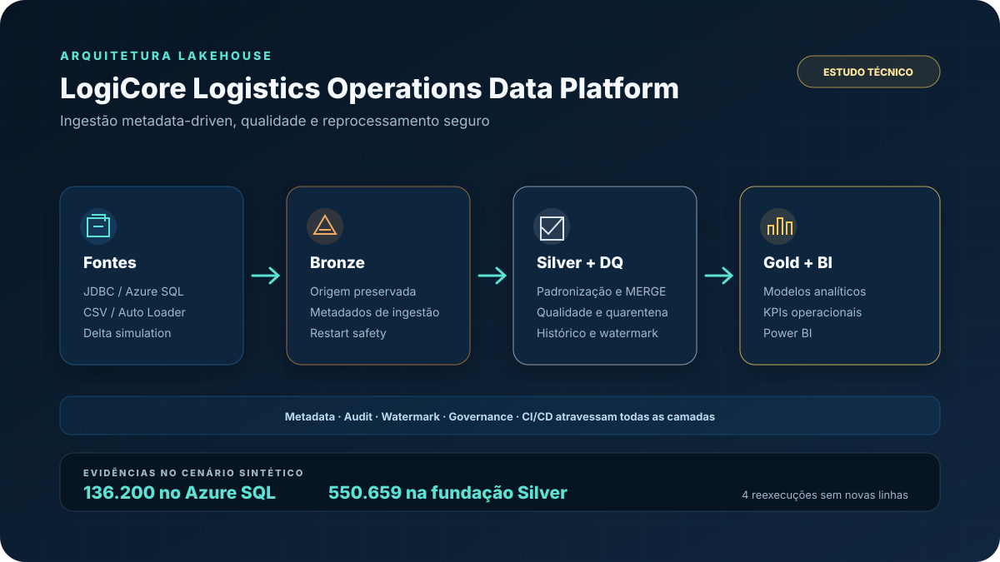

As-Is
- Fontes heterogêneas e regras implícitas.
- Histórico e reexecução sem controle uniforme.
- Qualidade descoberta apenas no consumo.
Padroniza fontes logísticas diferentes em uma base rastreável e reprocessável, com responsabilidades explícitas entre as camadas de dados.

ARQUITETURA DOCUMENTADA · DADOS SINTÉTICOSDiagrama editorial baseado na documentação técnica sanitizada do projeto privado.
Fontes de transporte, armazém, pedidos e rastreamento costumam apresentar formatos, granularidades e padrões de qualidade diferentes. Sem contratos e camadas claras, o consumo analítico fica vulnerável a duplicidades, falhas de parsing e reprocessamentos inconsistentes.
O projeto combina gerador de dados sintéticos, contratos, ingestões Delta/CSV/JDBC e fundação Silver no Databricks. A arquitetura foi desenhada para preservar a origem, padronizar entidades, controlar falhas esperadas e permitir reexecuções completas sem criar novas linhas indevidas.
Os números demonstram escala e confiabilidade do cenário sintético. Não são métricas corporativas nem resultados financeiros.
Como o repositório permanece privado, esta página funciona como caso público sanitizado: apresenta arquitetura, critérios de validação, resultados técnicos e limitações sem expor o código integral.